首个切口
替换 DirectorAgent.run() 的模型—工具循环，继续使用现有 Web UI、项目实体、Skill 与数据接口。
01 / 课题目标
本课题记录复杂项目核心部件替换的开发过程：提出方案、验证行为、控制迁移范围，并保留最终采用或放弃的依据。当前阶段为设计与验证准备，尚未实施引擎替换。
用户反馈此前自研智能体中台未达到预期；原架构文章仍提供了可保留的业务设计。[1] 本课题不以该反馈推导失败率，也不预设 Pi 必然优于自研。
替换 DirectorAgent.run() 的模型—工具循环，继续使用现有 Web UI、项目实体、Skill 与数据接口。
Pi只用于设计时；游戏保留专用运行链路，Jev＋LLM快路径另行评测。后台队列、试玩结算和媒体服务不随本轮迁移。
低风险是可检查的约束：旧业务行为必须保留，新增维护成本必须可见，未证实收益时允许停止。
| 目标 | 观察项 | 不接受的替代指标 |
|---|---|---|
| 业务质量 | 正确工具与参数、目标实体、授权和不重复写 | 历史单测数或生成代码量 |
| 交互与任务效率 | 首段文本、入队确认、最终业务完成、轮次与 tokens | 仅比较框架名称或单次 mock 耗时 |
| 工程效率 | 接入、升级、调试和回滚的实际工时 | 只统计删除了多少行代码 |
零越权、零重复写是拟议验收要求，不是已获得的成绩。保留自研、只采用部分适配能力、停止试点都是允许的结论。
02 / 原设计与现状
旧文记录了从同步执行到 ReAct 再到异步 Skill 编排的演进。[1] ReAct 在此指模型选择工具、观察结果并继续响应的循环；本课题沿用这一行为，不把旧文的设计承诺直接当作当前验收结果。
原方案把意图理解、任务分派和领域生产拆开；这些业务职责不会因采用 Pi 而消失。[1][2]
| 资产 | 保留原因 | 迁移约束 |
|---|---|---|
| Read + submit_task_plan | 聊天与长任务解耦 | 理解阶段不直接开放 write/generate |
| SkillRegistry / SkillRuntime | 保存领域参数、执行角色和数据副作用 | 一份注册源，不另写 TS 业务实现 |
| RepositoryPort / 项目选角 | 保存权威数据与角色模型映射 | 新引擎不得绕过存储、授权或模型治理 |
旧文的 54+ Skill、17 ADR 与 7 角色是历史描述；本文不把它们重新发布为当前规模或质量指标。[1]
本轮以 HEAD 5e3c5ec 加 main 未提交工作为磁盘基线，未查询生产数据库或证明线上已加载全部改动。[3]
| 旧文或界面印象 | 本轮代码观察 | 设计影响 |
|---|---|---|
| 提交后立即解锁 | 计划后仍有模型确认；SSE done 前同步更新 Memo | 区分入队、聊天结束与任务完成 |
| Schema 过滤阻止写工具 | 执行路径仍需拒绝白名单外调用 | 模型输入约束不能代替服务器授权 |
| SSE 就是逐 token 输出 | 导演 loop 调用默认非流式模型接口 | 更换 loop 和改流式传输分别验证 |
以上是静态发现，不是已复现的线上故障统计。旧文章未完整记录前次尝试的失败原因；仍需用真实、脱敏的业务案例核对。[1][3]
补充解释 · 不影响主线阅读
提示词精简、默认历史 5→2 轮、Skill 参数提示、计数器调整与局部 upsert 已纳入比较；C-158 仍是旁路辅助判定。[3]
03 / 路线比较
嵌入使用指通过编程接口调用 Agent 运行时，无需终端界面。Pi core 与完整 AgentSession SDK 都可嵌入 Node，承担的会话职责不同；本轮 0.86.0 包采用 MIT 许可，coding-agent 声明 Node≥22.19.0。[4][5]
首个对照选择 Pi core 的最小切口；如果明确需要自动压缩和树形会话，再验证完整 SDK，避免重复实现确实需要的现成功能。
| 路线 | 承接职责 | 额外工作 |
|---|---|---|
| 改进自研 | 现有 Python loop 与业务兼容 | 自行维护工具流、上下文与取消 |
| Pi core + ai 0.86.0 | 循环、工具、事件；模型层可独立选用 [4] | Python↔Node 桥接；持久化和摘要策略由宿主管理 |
| Pi AgentSession 0.86.0 | 会话树、压缩、重试、资源加载 [5][6] | 受控资源加载器、PG 会话桥接、避免双重摘要 |
Pi 的 SKILL.md 是按需加载的说明；导演台 SkillDefinition 带执行器、权限及副作用。二者不能通过复制目录直接互换。[1][5]
补充解释 · 不影响主线阅读
这些版本仅代表本轮核查基线，不表示永久最新；支持 Python 也不代表可以原样装进导演台现有环境。[9][10][11]
| 候选 / 许可 | 适用价值 | 已知限制 |
|---|---|---|
| PydanticAI 2.47.0 / MIT | 类型化工具、依赖注入、延迟工具结果 [9] | 核心要求 Pydantic≥2.12，现有 pin 为2.11.7；slim也需升级 |
| LangGraph 1.2.12 / MIT | 显式状态图与 checkpoint；适合复杂暂停/恢复 [10] | 状态持久化与业务事务仍需协调；暂不迁移队列 |
| OpenAI Agents 0.22.3 / MIT | Python Runner、Session 与人工审批；可接非OpenAI模型 [11] | Pydantic≥2.12.2及Starlette≥1.3.1与现有依赖冲突；默认trace需处理 |
PydanticAI 完整包的 web extra 同样要求 Starlette≥1.3.1；FastAPI 0.116.1 要求 Starlette<0.48。优先在隔离环境验证 slim，禁止修改共享虚拟环境试装。[9][12]
Miyo 0.2.28 是本地上下文产品，可通过 CLI 和远程 MCP 向外部 agent 提供资料；没有据此确认可替换循环的公开 SDK。[13]
04 / 逻辑边界
目标设计复用现有业务能力，仅新增适配边界。图中的 EngineAdapter、PlanGateway 和 ModelGateway 是本项目拟议组件名，不是 Pi SDK 已提供的业务服务。
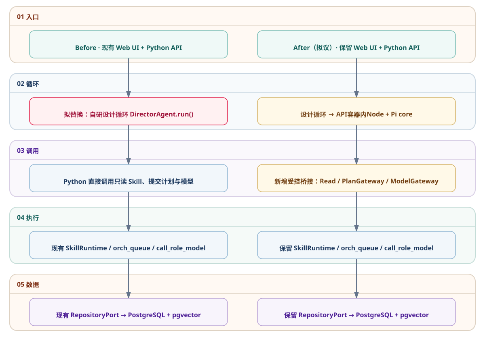
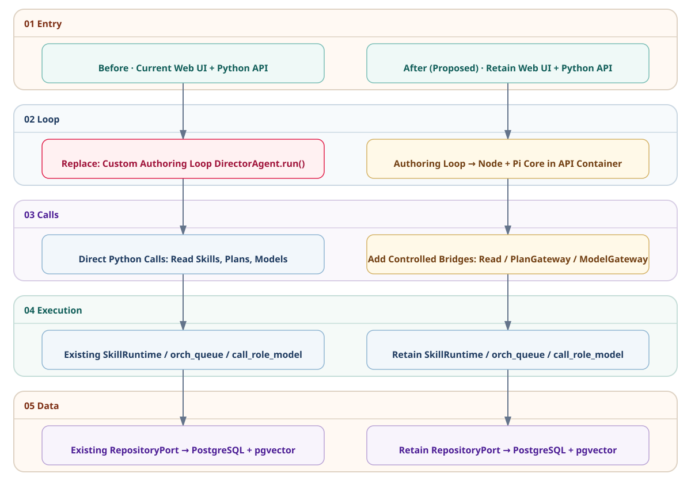
| 变更类型 | 具体内容 | 边界与代价 |
|---|---|---|
| 替换 | DirectorAgent的通用模型—工具循环交给Pi core。 | 业务策略、预算与退出规则仍要适配；不是把整个Python模块直接删除。 |
| 新增 | EngineAdapter、API容器内的Node进程、受控工具/模型桥接。 | 新增跨进程通信、身份校验和生命周期管理；不能把这些成本归零。 |
| 保留 | UI/API、Skill、队列、项目选角与模型治理、RepositoryPort/PG。 | 阶段A保留会话历史与Memo；试玩、结算和媒体服务不迁移，既有队列风险也不会自动消失。 |
调用经过宿主验证后才能执行；Pi 不获得数据库、任意文件系统或生产 shell 的访问能力。
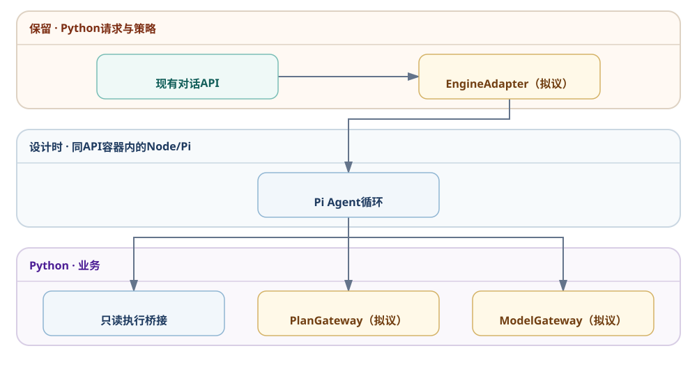
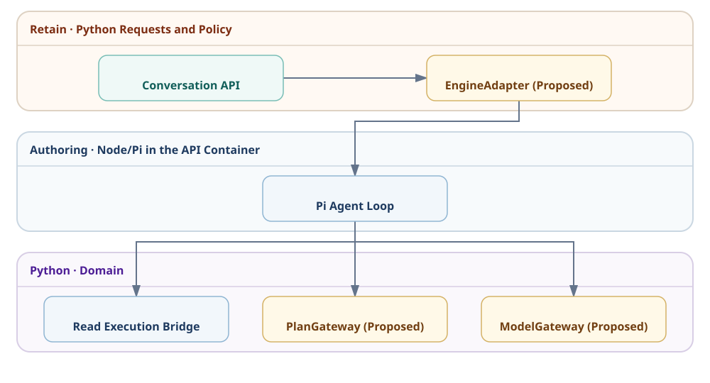
SkillRegistry 输出本次运行的工具清单，Node 为它生成 AgentTool 包装；业务执行器仍留在 Python，避免维护两份能力注册表。
| 契约 | 关键字段 | 校验规则 |
|---|---|---|
| 运行输入 | run_id / project_id / conversation_id / deadline | 由已认证请求解析，不接受模型覆盖项目 |
| 配置快照 | prompt_version / toolset_hash / model_route_revision / memo_version | 运行内冻结；换模型只影响后续run |
| 工具清单 | name / category / schema / side_effects | 只开放read＋plan；批准规则在服务器保存 |
运行预算另带 max_turns、max_tool_calls、token_budget 与 retry_policy；宿主在每轮和工具执行前检查。JSON Schema 转换不得静默改变 required、默认值和额外字段；无法映射时在模型请求前明确失败。
补充解释 · 不影响主线阅读
AgentSession SDK 支持自定义工具、资源加载器和内存会话；默认资源发现与编码工具需要显式收窄。[5][7]
05 / 运行流程
采用「只完善三个已有场景，不新增，不生成图片」作为贯穿样例。以下是拟议执行流程，用来设计测试；它不是已运行的模型结果。
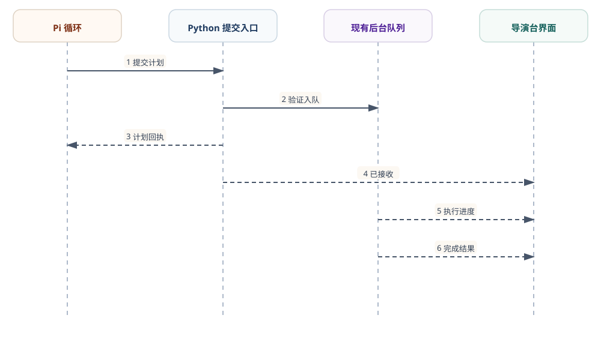
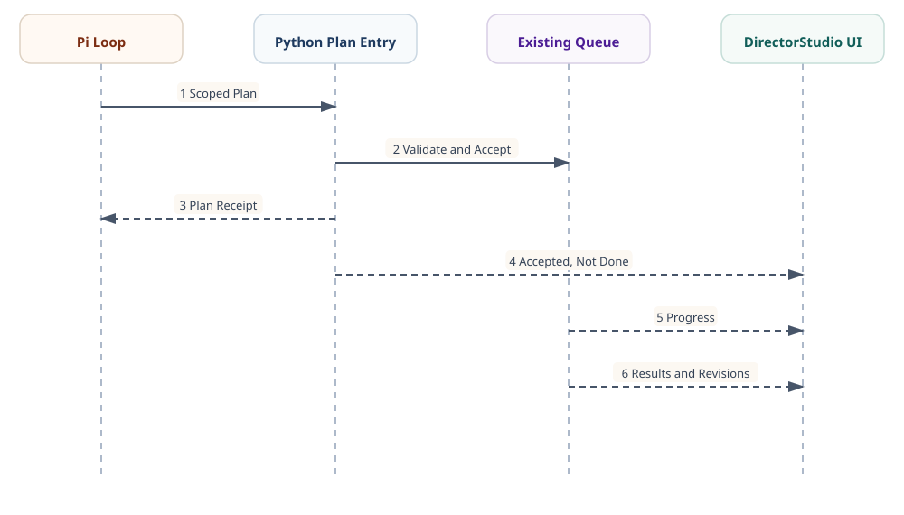
前台只负责读数据与提交计划，后台仍由现有角色专家执行；成功入队不能表述为内容已生成。
从当前项目取得三个 scene_id 与实体版本；保留不新增、不出图的约束。
PlanGateway 检查 Skill、参数、目标归属和审批，使用稳定 operation_id 持久接收计划。
回传 plan_run_id；对话可按批准策略结束。若后台尚未完成，明确显示已接收或执行中。
orch_queue 驱动领域 Skill；从任务日志获取逐实体成功、失败和版本，不从模型确认文字推断。
补充解释 · 不影响主线阅读
Pi core 默认支持并行工具；首期采用 sequential 保持与自研对照一致。terminate:true 只在批次全部最终结果都终止时跳过后续模型轮。[4]
宿主限制每run只接受一个有效计划；成功接收后拒绝额外副作用。混合read/plan批次不能只靠terminate确保停止。
「列出场景，不修改」在读取后回答；「改这个角色」目标不唯一时澄清。没有计划不是未完成任务。
SSE 是服务器向浏览器持续发送事件的传输方式；事件名本身不证明模型逐token输出。Pi事件需映射到原UI契约。[3][8]
| Pi / 宿主事件 | 导演台事件 | 必要约束 |
|---|---|---|
| text_delta | token | 注明真实delta或完整响应后输出 |
| 工具开始 / 最终结果 | tool_start / tool_done / tool_error | 保留call_id；部分参数只预览，完整校验后执行 |
| 持久计划回执 | plan_submitted | 后台完成继续来自原队列 |
| session settled | agent_done，再保存消息 | SDK agent_end 后可能重试；不能提前宣告结束 [5][8] |
内部事件携带 run_id、sequence、project_id 与 conversation_id；重连去重与结果查询由宿主管理。SkillResult.success=false 必须映射为明确失败。
06 / 状态与恢复
会话恢复重建模型上下文；任务恢复决定哪些业务操作可以继续。两者使用不同数据和确认边界，Pi会话持久化不能替代业务事务。
首期维持现有历史窗口和项目 Working Memo，仅使用 Pi 的运行内状态；完整 SDK 接管会话是后续可单独验收的范围。
| 状态 | 首期权威 | 后续设计边界 |
|---|---|---|
| Conversation / 工具记录 | 现有PG会话；旧tool_events有损 [3] | 不得伪造旧tool pairs；新增完整transcript需数据审查 |
| Working Memo | 现有项目级字段 | 更新带版本比较；过期run不得覆盖新Memo |
| Pi会话树 / compaction | 首期不接管 | SDK内存会话桥接Repo；不同时维护PG/JSONL双真相源 [6] |
compaction 是压缩模型上下文的摘要过程，不是修改游戏实体或统一试玩记忆。一个会话只允许一个前台写入run；同项目跨会话Memo冲突由宿主处理。
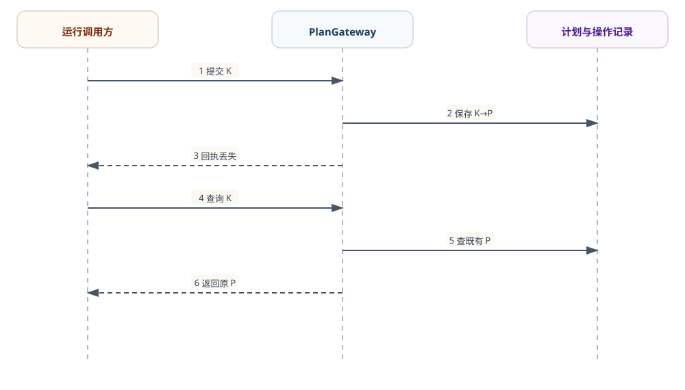
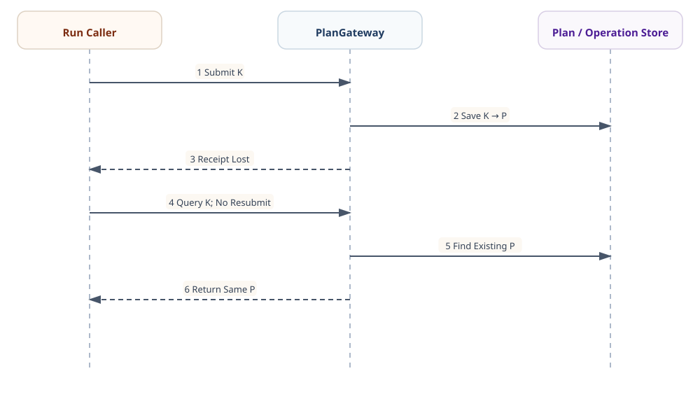
框架检查点与数据库副作用不天然处于同一事务，必须允许明确的「状态不明」而不是猜测成功或失败。
| 故障位置 | 恢复动作 | 禁止动作 |
|---|---|---|
| 已入队、回执丢失 | 按原operation_id查询并返回已有plan_run_id | 换引擎或换键再次enqueue |
| 业务写完成、日志确认失败 | 对账业务版本和操作记录；不能判定则人工处理 | 仅因日志缺失就重跑写工具 |
| 线程超时或服务重启 | 记录现有队列限制；单独验证执行器恢复 [3] | 声称换loop已保证恰好一次执行 |
当前队列超时可能留下运行线程，重启时运行中任务会被取消。[3] 保留队列能缩小迁移面，也意味着这些限制仍然存在；写入试点前必须通过对应故障测试。
补充解释 · 不影响主线阅读
operation_id 表示同一次业务操作，call_id 只关联一次模型工具调用。超时重试必须保留前者；这套应用机制尚未实现。
07 / 容器与进程
根据用户明确的部署取舍，优先方案由独立Pi容器调整为共置：postgres、director-api、player-portal共3个应用容器；API内为Python和Node两个进程。现有Compose尚无Pi启动项，以下仍是拟议设计。[17]
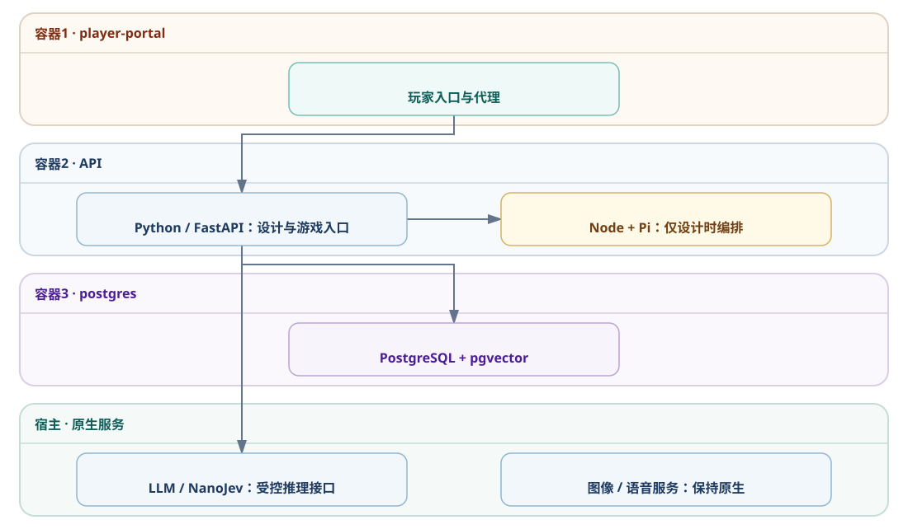
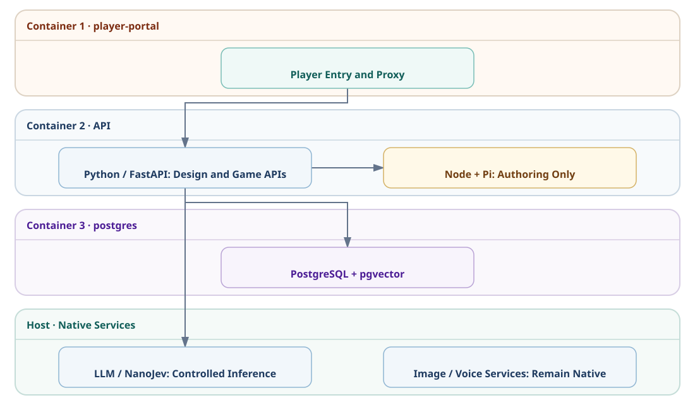
Pi是编排SDK，不在API容器中加载一套LLM权重。同容器减少服务数量，但不能代替权限、状态和资源隔离。
| 部署单元 | 拟议内容 | 边界 |
|---|---|---|
| postgres | PostgreSQL＋pgvector | 存储权威保留；Node不取得PG凭据 |
| director-api | Python/FastAPI＋一个Node/Pi进程 | Pi仅设计时；纯游戏模式可不启动Node（拟议） |
| player-portal | 现有玩家入口 | 游戏请求不因Pi不可用而被阻断 |
宿主LLM、NanoJev、图像和语音服务另计，不必为本方案同时启动两套Jev权重。若恢复独立Pi容器，应用容器数才增至4；同容器是部署优先项，不是更强隔离的证明。
需要统一的进程管理入口，但分别处理API与Node状态；这些是待实现的验收要求，不是已有运行保障。
| 要求 | 机制与失败边界 |
|---|---|
| 只启动一份Node | 不在每个Uvicorn worker初始化时重复启动；支持信号转发、回收子进程和有界重启 |
| 按功能报告就绪 | 分开进程存活、游戏依赖与设计Pi状态；Node异常令设计明确不可用，而不是拖垮游戏readiness |
| 承认共同故障域 | 容器发布重启或OOM仍可能影响两进程；实测影响，不承诺零传播 |
同一游戏运行采用明确的数据版本；试玩期间的导演编辑属于设计请求，不能无冲突检查地改写正在使用的判定前提。
先保持模型治理不变，再决定是否使用 pi-ai 的原生流式传输，避免同时改变运行时、模型和调度三个变量。
Pi custom streamFn 经内部桥接调用 Python call_role_model。保留选角、限流与usage；当前返回完整结果，此阶段只能证明控制流与契约。
统一调用授权、配额和用量归属后，再允许pi-ai直连本地推理端。核验Qwen思考参数、工具delta、结束原因和取消，不默认兼容。
Pi 提供 OpenAI-compatible 与 Qwen 相关兼容参数；支持这些参数不等于当前 Qwen 后端已验收。[15] 首阶段包装完整响应也不能宣称获得真实首字改善。
共置仍须隔离会话与凭据；若需要运行不可信扩展，独立worker或沙箱仍是更强的备选。
08 / 游戏链路
玩家行动继续进入专用playtest链路，不触发Pi规划、设计Memo或Pi自动压缩。Jev由游戏业务服务直接调用；未来快路径是否加速，要以质量和关键路径测量决定。现有C-158仍是非权威辅助复核。[18]
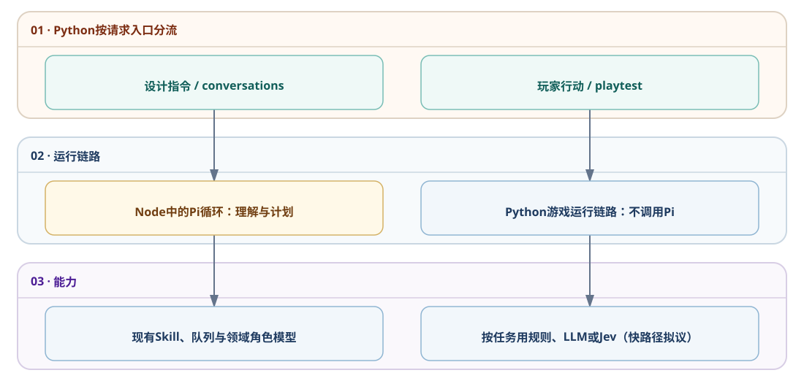
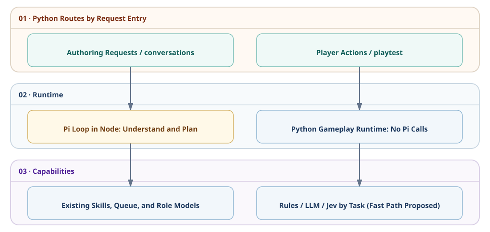
不应在原来的全部LLM调用前机械增加一次Jev。优先让明确规则直接执行，再按任务是否适合、是否经过验证选择判定或生成模型。
| 任务 | 目标路径 | 限制 |
|---|---|---|
| 数值、权限、已知字段规则 | 确定性代码 | 无需模型即可判断时不增加推理 |
| 有限候选或布尔语义判定 | 经场景评测的Jev | 保留不确定状态；原始概率不能直接当已校准置信度 |
| 开放叙事与复杂推理 | LLM | 不强制先做一次无收益Jev调用 |
| 依赖新叙事的判定 | 文本可用后判定 | 不可声称预先判定；只并行无数据依赖的任务 |
Jev替代适合的判定、减少重试或支持无依赖并行，才可能节省时间。低置信路由与服务故障要分开记录，不能用静默fallback伪造判定成功。
源码显示C-158在原LLM状态分析之后，对明确提出且匹配唯一条件的退出事件做旁路复核，不改状态、不减少原LLM调用。[18]
| 现状 | 设计含义 |
|---|---|
off / manual / shadow | 辅助观察路径，尚无自动判定快路径 |
authoritative=False / calibrated=False | 不把模型概率或与LLM一致率当业务正确率 |
| 连接文件校验UID、权限与127.0.0.1 | 容器loopback不指宿主；当前客户端不能靠改URL直接复用 |
后续须验证允许列表宿主网关/代理、服务token和模型身份，以及最小secret挂载和UID处理。不得挂整份HOME或无保护开放0.0.0.0。本课题不接管现有Jev及结算实验。
共同RFC把软叙事提示与硬机制结算的划分列为待产品确认项；本文的「规则优先」不授权将旧自然语言提示直接编译为强制规则。[19]
未形式化、未批准的规则继续保持原行为。LLM和判定模型提供候选，不因参数合法或双方一致就获得状态写入权。
先明确哪些字段属于硬机制、旧项目怎样兼容，再评测单任务快路径。改成「先规则提交再叙事」也要独立验证，不能借用现有叙事后分析的结果。
共同F0契约/语义批准与B3快路径准入均未通过。本文G0–G4是本线验证步骤，不替代共同审批；Pi创作验证与游戏快路径上线仍分别推进。[19]
游戏绕过Pi，仍可能与设计文本、图片生成和Jev争用GPU及内存。容器数量不能证明时延隔离。
09 / 风险与回滚
引擎可替换不意味着业务操作可以随意重放。模型故障、取消、授权失败与队列状态必须保持可区分，不能通过静默切换另一引擎掩盖。
影子验证只观察候选决策；它的计划提交只能落到隔离模拟库，不能向生产队列发送写请求。
回滚只改变后续运行选择，不重新执行状态不明的旧请求，也不撤销已经发生的业务副作用。
测试项目明确选择engine/version；同一个run不在两套引擎间自动跳转。
检查原operation_id、已入队计划和待批准任务；旧任务保持原schema/engine版本至终态。
新run恢复legacy；保留旧会话和任务记录。任何越权、重复写或串项目问题立即停止扩大试点。
补充解释 · 不影响主线阅读
Pi的取消信号需要底层工具协作；它不能撤销已提交事务，也不能强制终止现有Python线程。[4]
| 取消位置 | 应有结果 |
|---|---|
| 模型生成 / 未提交计划 | 停止请求与后续工具调度；提交入口拒绝过期run |
| 排队任务 | 沿现有队列取消接口确认终态 |
| 运行中工具 / 已提交事务 | 显示不可中断或状态不明；业务撤销走已有版本流程 |
读重试与写重试分开配置，并给provider、loop、队列设置统一总预算；避免三层各自重试导致调用倍增。任何Skill失败都要能关联到run、call和step。
10 / 验证与成本
框架更换不会自动提高同一模型的token生成速度。测试既要检查任务质量，也要区分模型时间、额外轮次、工具时间、排队和跨进程开销。
A轨仅换运行时；B轨逐项改变策略，并把同样优化应用到自研对照，避免候选因少做工作而获得虚假的框架优势。
| 轨道 | 保持或改变 | 可得结论 |
|---|---|---|
| A：等价契约 | 同模型/量化、prompt、schema、历史/Memo、工具结果、串行、提醒/终止/确认策略与重试预算 | 循环、协议、事件和纯运行时开销差异 |
| B：策略优化 | 确定性确认、阈值Memo、真流式、只读并行、字段投影逐项消融 | 收益来自哪项策略，质量是否受损 |
案例覆盖：纯讨论/查询、单字段修改、批量enrich、否定/歧义、坏参数/非法工具、取消/超时/回执丢失、两项目并发和长对话。所有write/generate仍走同一mock队列契约。
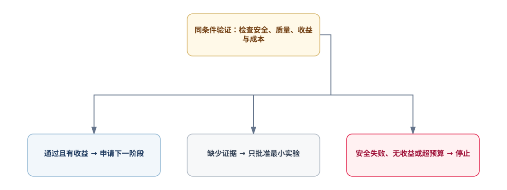
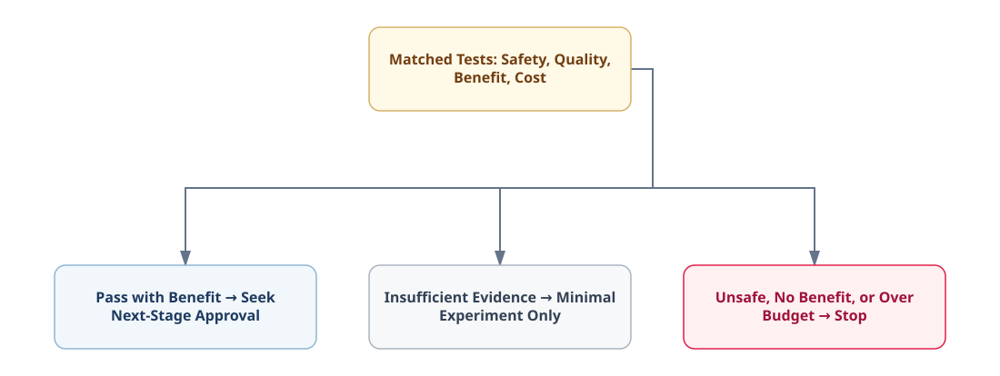
下表保留此前Pi范围的规划估算，本轮没有重新估时。双进程故障验证、容器连通和Jev游戏实验另计；减少一个容器不能直接等同于减少总工期。
| 投入项 | 本轮估算 / 边界 |
|---|---|
| Pi隔离验证 | 4–6人日，先设6人日复核点；到期按证据决定停止或续批 |
| Pi有限接入 | 12–20人日，仅在保留业务层/队列前提下；不含幂等执行器重构 |
| 其他与持续成本 | Python依赖升级、同容器双进程监督、版本回放与队列治理分别计账；Jev连接和质量验证另计，不并行建设通用中间件 |
继续：全部安全/业务契约通过，任务质量不低于冻结基线，且预先选定的效率或维护指标有可重复改善。停止：任一安全失败、同条件无收益，或新增维护成本超出已批准预算。缺数据时只批准下一项最小实验，不批准生产替换。
以下条件尚未测试；它们约束新部署和Jev试验，不能被设计时Pi任务成功率替代。
| 场景 | 必须观察到的结果 |
|---|---|
| 纯游戏运行 / Node异常 | 玩家trace中Pi调用为0；游戏按自身依赖就绪，设计故障明确可见 |
| 同容器故障与并发负载 | 记录OOM/重启对两进程的影响；比较仅游戏与设计/Jev并发的排队和完整回合耗时 |
| Jev判定与状态写入 | 按场景验证误通过/误拒绝、校准、版本和回合顺序；零重复结算 |
Pi和Jev各有独立开关与回滚。基线、错误率和延迟预算需实验前明确；未过门时不启用权威Jev判定，也不把异常静默改写成通过。
补充解释 · 不影响主线阅读
离线mock使用实际引擎循环和同一脚本决策序列，替换模型transport与业务副作用；它不证明模型理解中文或选对工具。
TTFT在本文指请求到首个可见文本的时间；若模型先执行工具而没有文本，另记首事件与计划确认时间，不用工具事件冒充首字。
11 / 进度与结果
本页是可持续更新的专项记录。每次状态推进都需要版本、测试条件和证据；设计完成、文章验收与产品迁移完成是三件不同的事。
已经完成的是资料和源码核查；没有引擎A/B结果，也没有生产切换。本页不以规划中的测试替代结果。
| 日期 / 工作 | 状态与证据 |
|---|---|
| 09-22：引擎初筛与代码基线 | 已完成：版本/许可、main脏改动、依赖冲突、静态检查 [3] |
| 09-23：结合旧文完善设计 | 已完成：职责、状态、故障走查与验证门；本文为可追踪产物 |
| 09-25：三容器与双链路设计 | 已同步文章与图示；进程、容器、Jev快路径均未实现或部署 [17][18] |
| mock / 真实模型 / 灰度 | 均未执行；需基线冻结和阶段授权，不提供成功率或延迟数字 |
| 生产引擎 / 最终收益 | 未替换；仍为现有自研路径。收益尚未证实 |
文章展示验证单独记录在页面验证记录，不计入引擎测试成绩。源码核查摘要提供相对路径和文件hash，不包含生产数据。[3]
先形成可重复的测试，再扩大副作用范围；每个阶段均可选择暂停，不以已经投入工时作为继续理由。
| 门 | 退出条件 | 当前状态 / 责任 |
|---|---|---|
| G0 基线冻结 | main改动整理、prompt/schema/config快照、脱敏样例 | 未开始 / 项目负责人批准整理方式 |
| G1 离线契约 | 真实loop mock回放、错误/取消/隔离测试 | 未执行 / 适配实现者与测试负责人 |
| G2 同模型质量 | 相同条件质量与资源测量，可复核原始结果 | 未执行 / 获准本地资源窗口后 |
| G3 有限切换 | 测试项目、幂等审批与回滚演练通过 | 未批准 / 独立迁移评审 |
| G4 闭环决定 | 采用、部分采用或停止；记录实际成本与质量 | 尚无最终结果 / 项目负责人 |
当前设计决定：D01保留业务层；D02先验证Pi core；D03会话SDK另设门；D04 Miyo只列上下文用途；D05无实测不宣布胜者。若后续会话需求使完整SDK更合适，更新D02并保留旧理由，不删除决策历史。
新增决定D06：3容器、API内Python＋Node；D07：Pi仅设计，游戏不依赖Pi；D08：Jev按场景独立评测，shadow不算提速。独立Pi容器降为更强隔离备选；这是设计修订，未部署。
当前结论是「方案已形成，替换收益未证实」；最终结果栏已有明确状态，不用空白或虚构成功填满。
假设同条件测试全部满足业务契约，且预先选定指标稳定改善：只批准下一阶段测试项目；生产切换仍须审批与回滚演练。此为判据示例，不是实测。
假设「已入队但回执丢失」导致第二个计划：G1失败，停止写入试点。保留自研并单独解决幂等边界；即使候选首字更快也不通过。
闭环记录必须包含：最终选项、engine/业务代码版本、数据集hash、测量条件、前后质量与耗时、故障记录、实际接入/维护成本、回滚结果和未解决限制。每条实验写明执行日期、执行人、命令及证据位置；无测试就保持未验证。
12 / 参考与边界
引擎来源于2026-09-22核查；09-25补充Compose、进程与Jev源码依据并同步设计。官方能力、静态观察和拟议方案分别标注；没有容器部署、模型实验或生产写入。
项目材料用于确定迁移边界，Pi固定版本资料用于确认可调用能力。
来源支持组件本身的能力，不为导演台业务正确性或速度作保证。
滚动产品文档可能与发布二进制有差异；接入前仍需锁版本和本地契约验证。